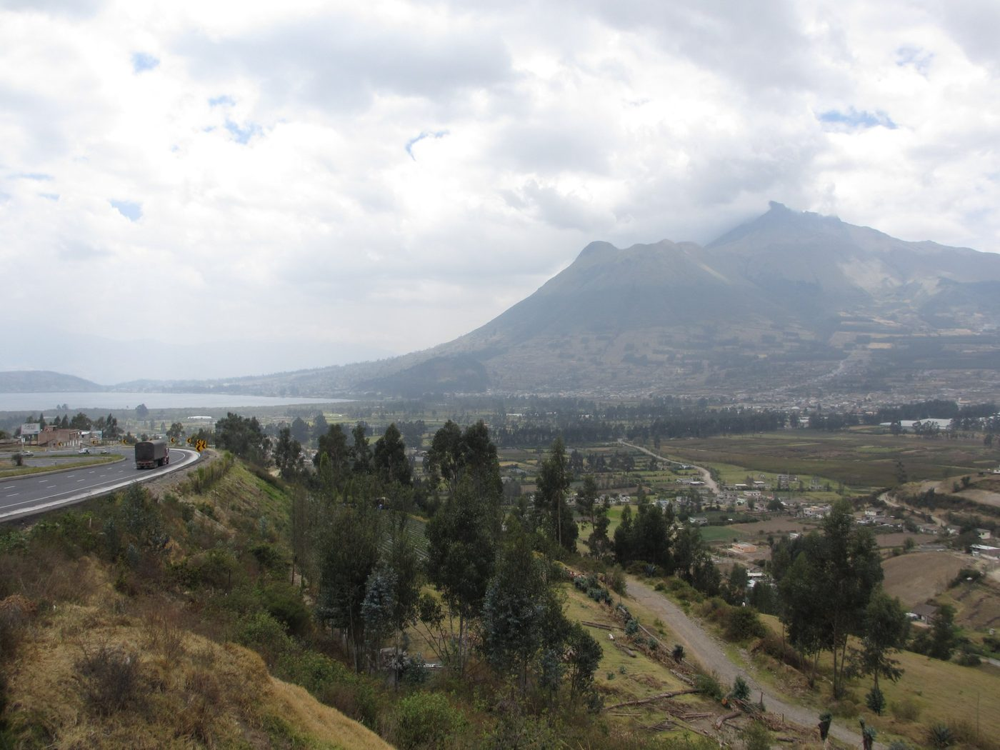
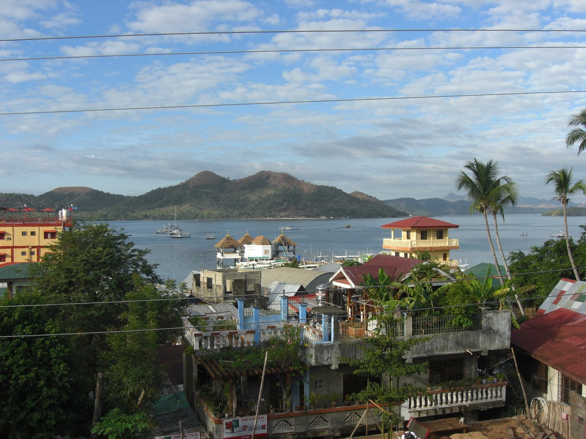

プロフィール
最新の業績は名古屋大学 研究者総覧をご覧ください。
研究関心
- 天然資源ブームとその政治・社会的インパクト
- 政治参加（投票行動、抗議運動）
- 資源政策
- 政治制度とインフォーマル経済
所属学会
- 日本比較政治学会
- 日本国際政治学会
- ラテン・アメリカ政経学会
- 日本ラテンアメリカ学会（理事）
- 日本政治学会
- Latin American Studies Association（米国）
学位・学歴
- 2007年4月～2010年3月 博士（政治学） 筑波大学人文社会科学研究科
- 2005年4月～2007年3月 修士（政治学） 筑波大学人文社会科学研究科
- 2002年8月～2003年7月 ユトレヒト大学法学部（オランダ）留学
- 2000年4月～2004年9月 法学士 京都大学法学部
職歴
- 2014年11月～現在 名古屋大学国際開発研究科国際協力専攻 准教授
- 2013年4月～2014年10月 日本学術振興会特別研究員（PD）京都大学地域研究統合情報センター付
- 2012年11月～2013年3月 筑波大学特任研究員
- 2010年10月～2012年10月 在ボリビア日本大使館専門調査員
- 2010年4月～2010年9月 筑波大学博士特別研究員
- 2007年4月～2010年3月、日本学術振興会特別研究員（DC1）
非常勤講師
同志社大学（2013～2014年度）、筑波大学（2015年度）、琉球大学（2016年度）、南山大学、中京大学
研究（渡航）歴
ペルー 2006, 2008, 2009, 2010, 2012, 2013, 2014, 2015, 2016, 2017, 2024
ボリビア 2008, 2010, 2011, 2012, 2013, 2014, 2015, 2016, 2017, 2024
パラグアイ 2011
チリ 2013, 2026
エクアドル 2015
趣味
サッカー、フットサル、ハイキング、水泳、将棋

